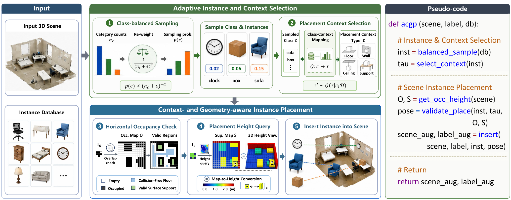
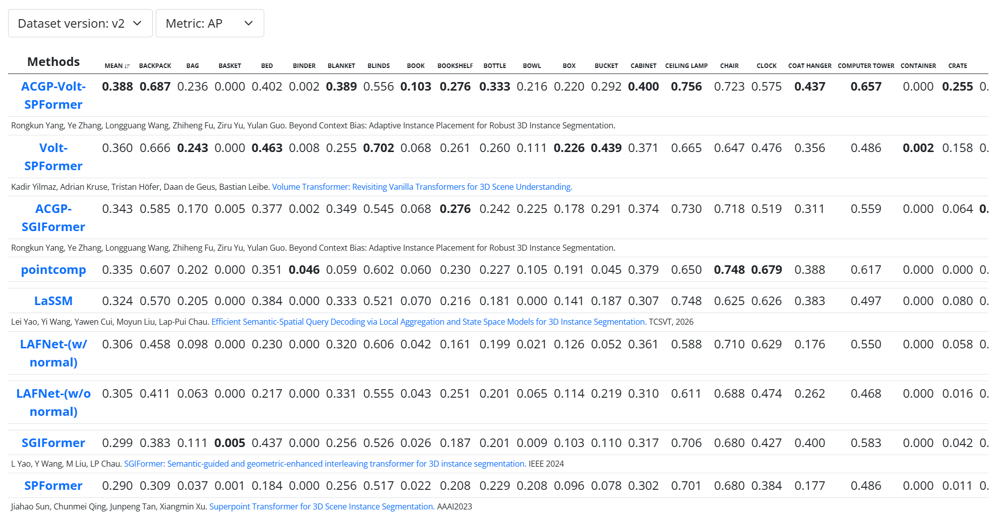
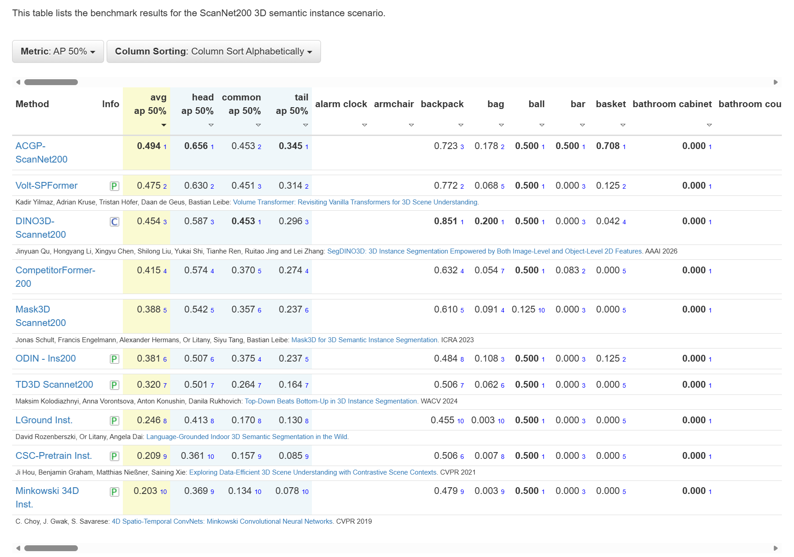
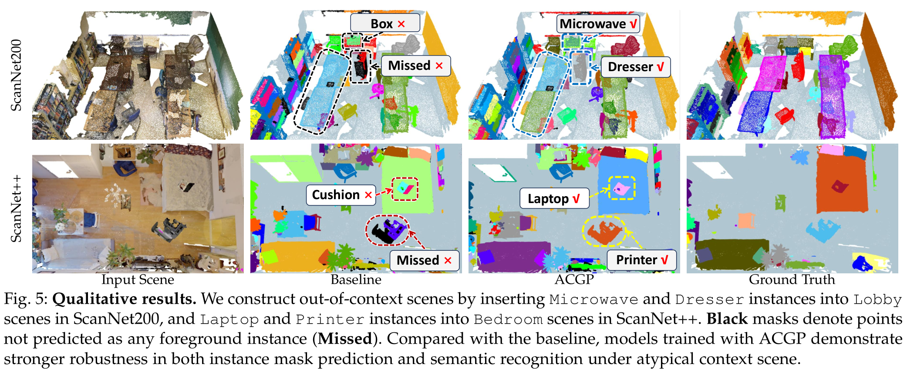

Beyond Context Bias: Adaptive Instance Placement for Robust 3D Instance Segmentation
Our method achieves new state-of-the-art performance
on the ScanNet200 and ScanNet++ test benchmark

Overall framework of ACGP.. Given a 3D scene and an instance database, ACGP selects instances via category-balanced sampling, queries their category-conditioned placement types, and places them at geometrically valid locations using occupancy- and support-aware validation to generate augmented scenes. The pseudo-code on the right summarizes the complete pipeline of instance-level augmented scene generation.



@misc{yang2026acgp,
title = {Beyond Context Bias: Adaptive Instance Placement for Robust 3D Instance Segmentation},
author = {Rongkun Yang, Ye Zhang, Longguang Wang, Zhiheng Fu, Ziru Yu, Yulan Guo},
year = {2026},
url = {https://github.com/SYSU-SAIL/ACGP}
}